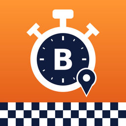

Datenschutz / Privacy
DeutschEnglishSupportImpressum
Datenschutzerklärung für die App „Bens Stoppuhr“
Stand: 11. November 2026
Verantwortlicher
Benjamin Hargarten, Anschrift siehe Impressum
E-Mail: kontakt@admota.de
Kurzfassung
Die App erhebt keine personenbezogenen Daten beim Entwickler. Es gibt kein eigenes Benutzerkonto, keine Werbung, kein Tracking, keine Analyse-Dienste und keine Server des Entwicklers. Uhren, Zeiten, Reglements, Verlauf und aufgezeichnete Strecken bleiben auf deinen Geräten. Nur wenn du an einem gemeinsamen Lauf teilnimmst, werden die dafür nötigen Daten über Apples iCloud (CloudKit) mit den anderen Teilnehmern geteilt.
Auf deinen Geräten gespeicherte Daten
Deine Uhren (Namen, Zeiten, Runden), Reglements (einschließlich Kontrollpunkten, Linien und Strecken auf der Karte), der Verlauf beendeter Messungen, eigene Themes und – nur wenn eine Uhr mit Positions-Wertung scharf geschaltet ist und läuft – die aufgezeichnete Strecke werden lokal in der App gespeichert. Zwischen iPhone und gekoppelter Apple Watch werden Uhren und Zeiten über Apples WatchConnectivity direkt zwischen deinen Geräten übertragen. Der Entwickler hat darauf keinen Zugriff.
Standort
Nur wenn du eine Uhr mit Positions-Wertung (Kontrollpunkt, Linie, Strecke, Geschwindigkeit) scharf schaltest und der Ortung zustimmst, nutzt die App deinen Standort auf dem Gerät, um Start, Runden und Ende automatisch auszulösen. Standortdaten werden weder an den Entwickler noch an andere Teilnehmer übertragen. In einem gemeinsamen Lauf sieht der Master nur, ob deine Ortung erlaubt ist und wann dein Gerät zuletzt erreichbar war, nicht deinen Standort. Die Strecke verlässt dein Gerät nur, wenn du sie selbst als GPX-Datei teilst. Rechtsgrundlage ist deine Einwilligung über die Standortfreigabe (Art. 6 Abs. 1 lit. a DSGVO); du kannst sie jederzeit unter Einstellungen → Datenschutz → Ortungsdienste widerrufen.
Gemeinsame Läufe (iCloud / CloudKit)
Wenn du einen Lauf anlegst oder einem Lauf beitrittst, speichert die App in einer geteilten iCloud-Datenbank deines bzw. des einladenden iCloud-Kontos: den Namen des Laufs, die Wertung des Masters, die Anzeigenamen und Uhren der Teilnehmer, alle Zeitereignisse (Start, Runde, Pause, Ende mit Zeitpunkt), den Ortungsstatus (erlaubt/nicht erlaubt) und den Zeitpunkt der letzten Verbindung. Diese Daten sehen alle Teilnehmer des Laufs. Zweck ist die gemeinsame Zeitmessung (Art. 6 Abs. 1 lit. b DSGVO). Die Daten werden von Apple nach der Datenschutzrichtlinie von Apple verarbeitet; der Entwickler hat darauf keinen Zugriff.
Löschen und Speicherdauer
Gemeinsame Läufe bleiben gespeichert, bis sie gelöscht werden. Als Teilnehmer kannst du einen Lauf jederzeit mit „Lauf verlassen“ verlassen: Die App löscht dabei deinen Anzeigenamen, deine Uhr und alle Zeitereignisse deiner Uhr aus dem Lauf und beendet deine Teilnahme an der Freigabe. Als Master kannst du einen Lauf mit „Lauf löschen“ für alle löschen: Damit werden der Lauf, die Freigabe und alle Daten der Teilnehmer aus deinem iCloud-Konto entfernt. Deine eigenen Zeiten legt die App dabei im Verlauf auf deinem Gerät ab – ohne Namen und Zeiten der anderen, nur mit deinem Platz und dem Abstand zum Ersten; dort kannst du sie einzeln oder alle löschen. Lokal gespeicherte Daten werden außerdem mit dem Löschen der App entfernt.
Käufe
„Plus“ (Einmalkauf) und „Pro“ (Jahresabo) werden ausschließlich über Apples In-App-Kauf abgewickelt. Zahlungsdaten erhält der Entwickler nicht; die App prüft nur bei Apple, welche Stufe freigeschaltet ist.
Daten, die Apple verarbeitet
Beim Laden aus dem App Store, bei Käufen, bei TestFlight und – falls du „Mit App-Entwicklern teilen“ aktiviert hast – bei Absturzberichten verarbeitet Apple Daten nach der Datenschutzrichtlinie von Apple. Der Entwickler erhält dabei nur zusammengefasste bzw. anonymisierte Informationen von Apple.
Diese Webseite
Diese Seiten werden über GitHub Pages (GitHub, Inc., USA) bereitgestellt. Beim Aufruf verarbeitet GitHub technisch notwendige Daten wie deine IP-Adresse, siehe GitHub-Datenschutzerklärung. Der Entwickler setzt keine Cookies und keine Analyse-Werkzeuge ein.
Kontaktformular
Das Kontaktformular im Impressum wird über den Dienst Formspree (Formspree, Inc., USA) versendet. Dabei werden deine E-Mail-Adresse, deine Nachricht sowie technisch notwendige Daten (z. B. IP-Adresse) an Formspree übermittelt, dort gespeichert und an mich weitergeleitet. Zweck ist allein die Beantwortung deiner Anfrage (Art. 6 Abs. 1 lit. b bzw. f DSGVO). Die Verarbeitung findet auch in den USA statt; Einzelheiten in der Datenschutzerklärung von Formspree. Wenn du das nicht möchtest, schreibe mir stattdessen direkt eine E-Mail.
Kontakt per E-Mail
Wenn du mir schreibst, verarbeite ich deine E-Mail-Adresse und den Inhalt nur zur Beantwortung deiner Anfrage (Art. 6 Abs. 1 lit. b bzw. f DSGVO) und lösche sie, sobald sie nicht mehr benötigt werden.
Kontakt per Post
Briefpost an die im Impressum genannte Anschrift nimmt die COCENTER GmbH, Koppoldstr. 1, 86551 Aichach, für mich entgegen, digitalisiert sie und stellt sie mir in einem Kundenkonto bereit (Art. 6 Abs. 1 lit. f DSGVO; berechtigtes Interesse: Erreichbarkeit unter einer ladungsfähigen Anschrift ohne Veröffentlichung meiner Privatanschrift).
Deine Rechte
Du hast das Recht auf Auskunft, Berichtigung, Löschung, Einschränkung der Verarbeitung, Datenübertragbarkeit und Widerspruch (Art. 15–21 DSGVO) sowie das Recht, dich bei einer Datenschutz-Aufsichtsbehörde zu beschweren, z. B. bei der Landesbeauftragten für den Datenschutz Niedersachsen.
Änderungen
Ändert sich die App so, dass andere Daten verarbeitet werden, wird diese Erklärung angepasst.
Privacy Policy for the app “Ben’s Stopwatch”
As of November 11, 2026
Controller
Benjamin Hargarten, address see legal notice
Email: kontakt@admota.de
Summary
The app does not collect personal data for the developer. There is no account, no advertising, no tracking, no analytics and no developer server. Stopwatches, times, rulebooks, history and recorded tracks stay on your devices. Only when you take part in a shared run is the data needed for it shared with the other participants via Apple iCloud (CloudKit).
Location
Only if you arm a stopwatch with position-based timing and allow location access does the app use your location on the device to trigger start, laps and finish. Location data is not sent to the developer or to other participants; in a shared run the master only sees whether location access is allowed and when your device was last reachable. The track only leaves your device if you share it as a GPX file yourself.
Shared runs (iCloud / CloudKit)
For a shared run, the app stores in a shared iCloud database: the run name, the master’s rulebook, participants’ display names and stopwatches, all timing events, location permission status and last-seen time. All participants of the run can see this data. Apple processes it under Apple’s privacy policy; the developer has no access.
Deletion and retention
Shared runs are kept until they are deleted. As a participant you can leave a run at any time with “Leave Run”: the app deletes your display name, your stopwatch and all timing events of your stopwatch from the run and ends your participation in the share. As the master you can delete a run for everyone with “Delete Run”: this removes the run, the share and all participants’ data from your iCloud account. Your own times are kept in the history on your device – without other participants’ names or times, only with your place and the gap to the leader; you can delete them there individually or all at once. Locally stored data is also removed when you delete the app.
Purchases
“Plus” (one-time) and “Pro” (yearly subscription) are handled solely through Apple In-App Purchase; the developer receives no payment data.
Your rights
You have the rights under Art. 15–21 GDPR (access, rectification, erasure, restriction, portability, objection) and the right to lodge a complaint with a supervisory authority.